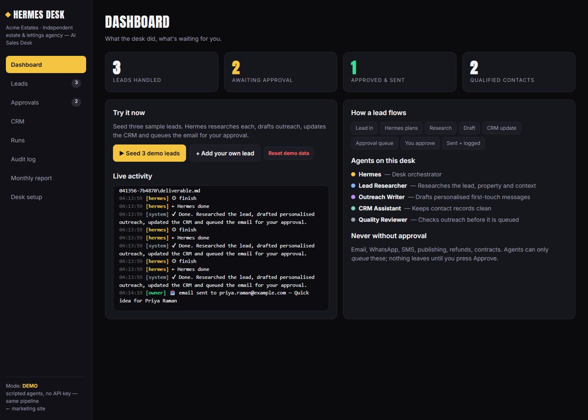
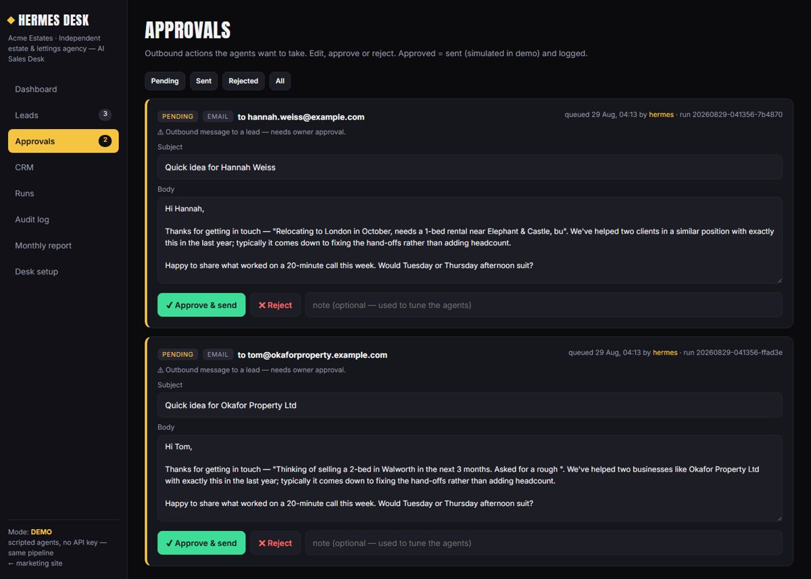
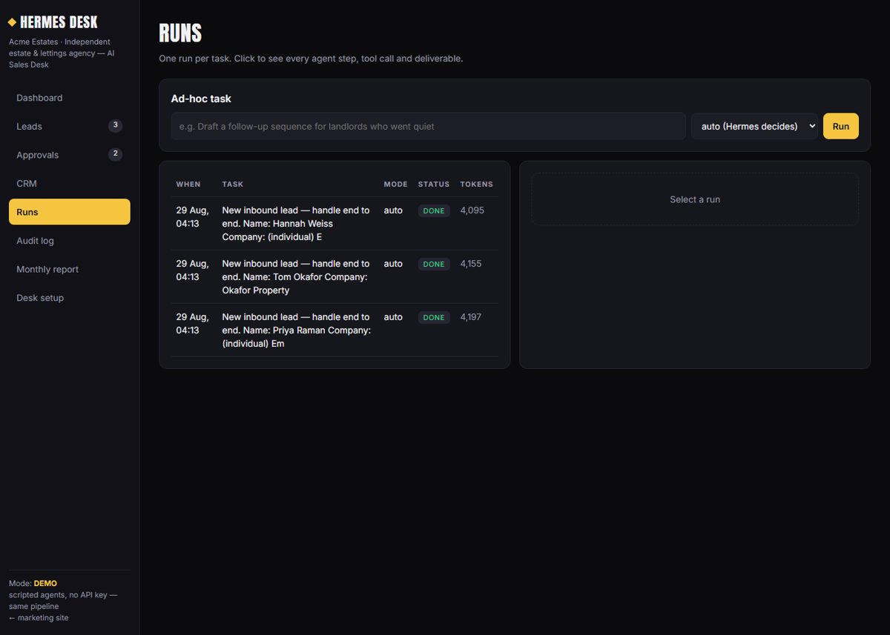
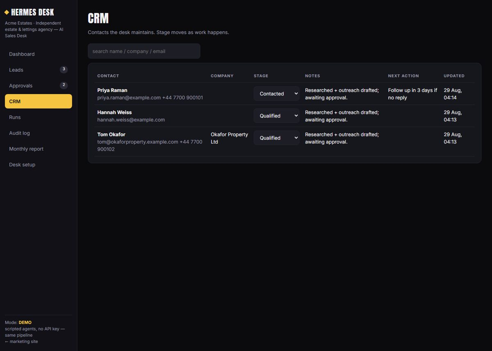
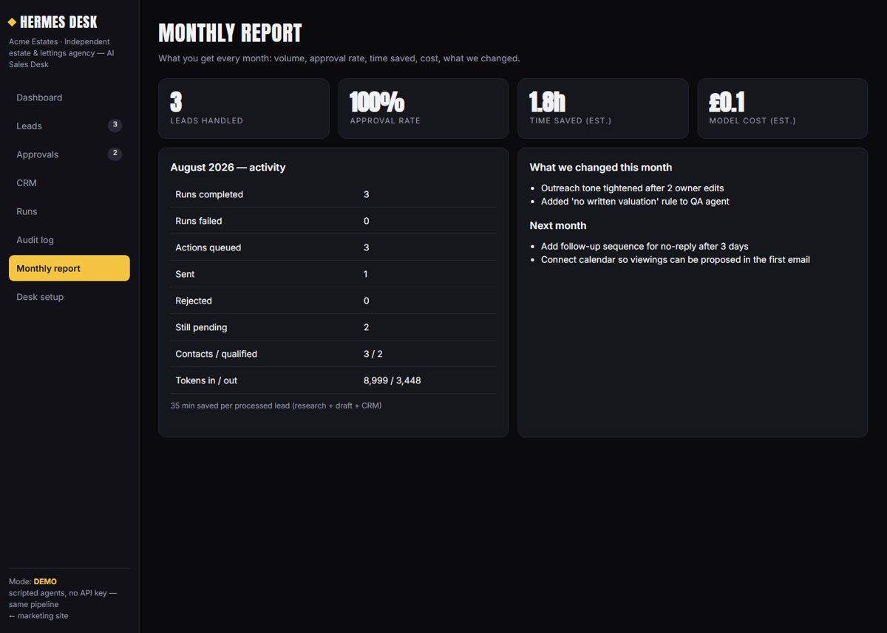

Atlas deploys multi-agent AI with computer vision and language models to document, understand and act on real-world operations, in real time, with a person approving anything sensitive.
Atlas turns live video, sensor data and documents into work: a fleet of specialised agents watches, reads, drafts and files, and every outbound action waits for your approval.
See the live pipeline belowThis is the pipeline an Atlas desk runs when cameras are one of its inputs. Stock footage from a shop, a stock room, a factory, a clinic and an office rotates as if it were seven cameras on one site. YOLOv8n runs in your browser on every frame. Every few seconds the frame and the counts go to the vision model, which narrates what it sees — streamed token by token. Each narration becomes an event in the log, and you can ask questions across all the cameras: the answer is retrieved from that log and cites the events it used.
The model's narration will appear here, word by word, once the detector is running.
A desk is a team of AI agents built around one job in your business — an orchestrator that plans and delegates, specialists that do the work, and an approval queue for you. Start with the desk that pays back fastest, then add the next. They share one memory, one CRM and one approval inbox.
Finds leads, researches them, drafts personalised outreach, updates your CRM and prepares follow-ups — you approve before anything is sent.
Answers enquiries, books and reschedules appointments, sends reminders, escalates anything it shouldn't decide.
Plans and drafts content, product copy, email flows and partner outreach, then reports on what moved the numbers.
Turns a brief into research, strategy, pricing and a client-ready proposal, reviewed by a QA agent before it reaches you.
Your cameras and sensors become an input. Shelf gaps, queues, doors and docks turn into reorder drafts, staff messages and bookings — approved by you.
The real product, running real models. Jobs come in, a team of agents researches, drafts and updates the CRM — every outbound message waits in one approval queue for you.





We sit with you and write down how each function actually runs today — inputs, decisions, hand-offs, what "good" looks like.
Email, calendar, CRM, forms, WhatsApp, Slack, your documents, your cameras. Your data stays in your accounts.
Specialised agents with your tone, rules and templates. Approval rules for anything sensitive.
Agents work the queue. You approve, edit or reject from one inbox. Nothing risky goes out on its own.
We watch failures, tune prompts and workflows, and add the next function when the last one is reliable. You get a report and a roadmap.